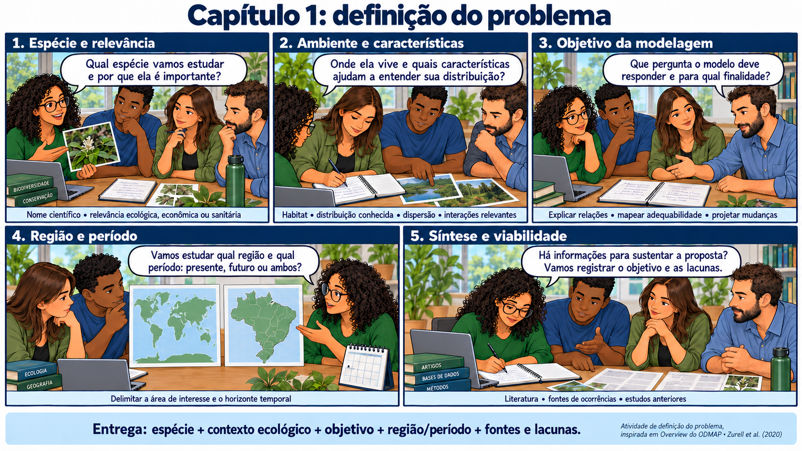

CAPÍTULO 01 · O · Overview
Uma equipe, uma espécie e uma pergunta
Antes do primeiro mapa, precisamos saber que pergunta queremos responder.
Base no curso: slides 17–26; 88–99; 126–143.
Quatro pesquisadores chegam à reunião com um mapa de registros. Uma pesquisadora aponta os vazios: “A espécie não está aqui, ou ninguém procurou?” O grupo percebe que desenhar pontos é apenas o começo. Para esta história, a equipe vai investigar a adequabilidade ambiental para Zaprionus tuberculatus.

Da curiosidade a uma pergunta investigável
Uma pergunta possível é: quais condições ambientais estão associadas aos registros conhecidos da espécie e onde essas condições ocorrem no Brasil? Uma extensão pergunta como a adequabilidade potencial varia entre cenários climáticos futuros. A primeira pergunta trata de associações no período de referência; a segunda exige transferir essas associações para condições diferentes.
O uso pretendido muda as escolhas. Orientar novas coletas requer atenção a ambientes pouco amostrados e ao custo de deixar passar uma área relevante. Apoiar vigilância de uma espécie introduzida também exige dados de hospedeiros, rotas de chegada e esforço de monitoramento. Um mapa climático, sozinho, não mede dano econômico nem estabelece prioridade sanitária.
Três níveis de afirmação
| Tipo | No estudo da equipe |
|---|---|
| Fato documentado | Há um registro com local, data e identificação que podem ser conferidos. A confiabilidade depende da qualidade dessa documentação. |
| Inferência | O modelo estima uma associação entre registros e condições ambientais, condicionada ao desenho e aos dados. |
| Hipótese | A disponibilidade de água limita o estabelecimento. A associação climática é compatível com essa hipótese, mas não demonstra o mecanismo. |
A equipe escreve alternativas: a concentração dos registros pode refletir clima, disponibilidade de recursos, facilidade de acesso ou maior número de observadores. Perguntar que evidência distinguiria essas explicações ajuda a evitar uma história construída somente depois de ver o mapa.
my.species <- "Zaprionus tuberculatus"Pausa para o grupo
- Escreva uma pergunta que o modelo pode responder e outra que exige dados adicionais.
- Qual resultado faria a equipe rever sua hipótese?
- Se o mapa fosse usado amanhã, qual erro teria maior consequência?